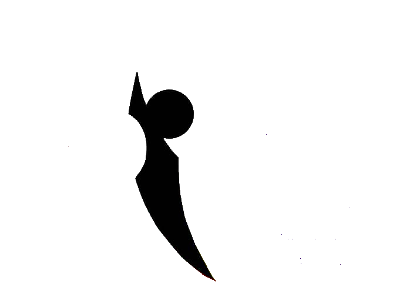
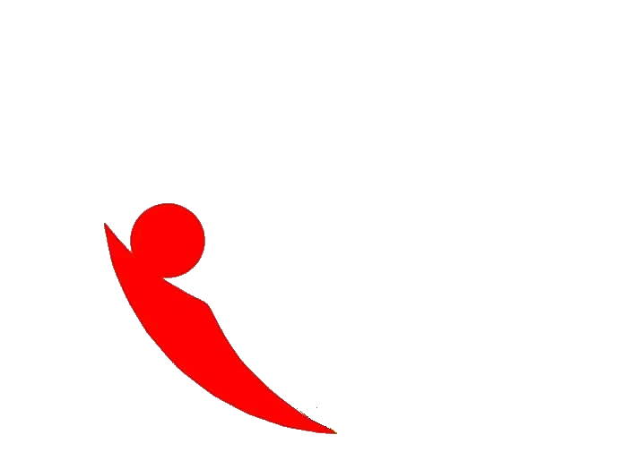
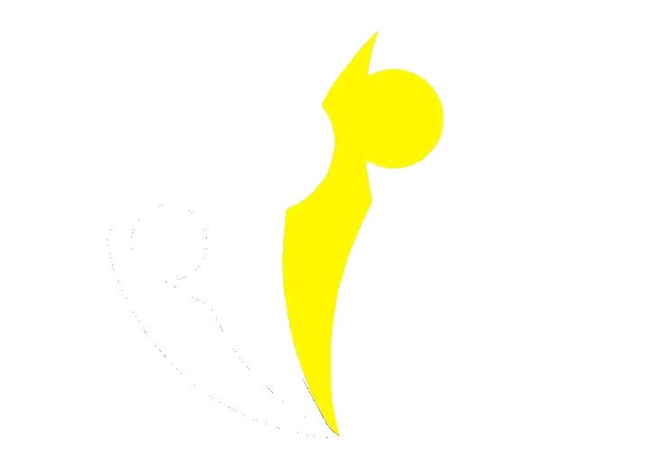
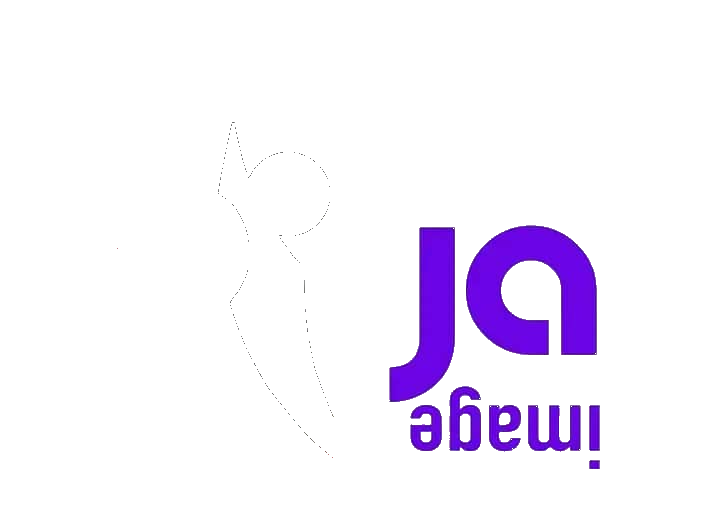
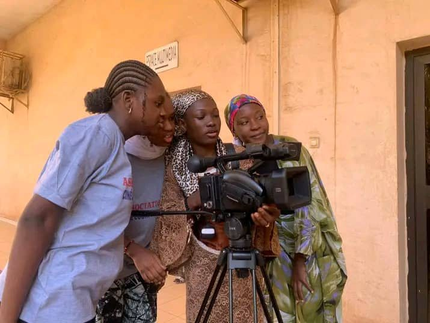
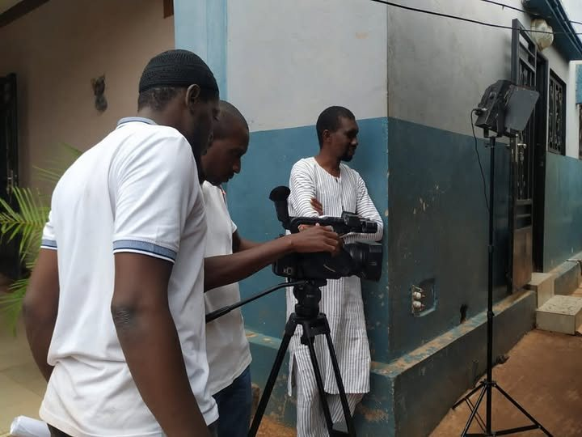
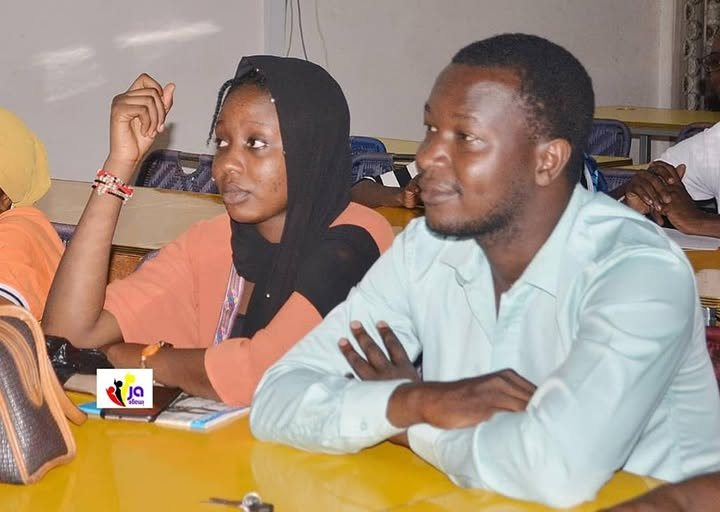
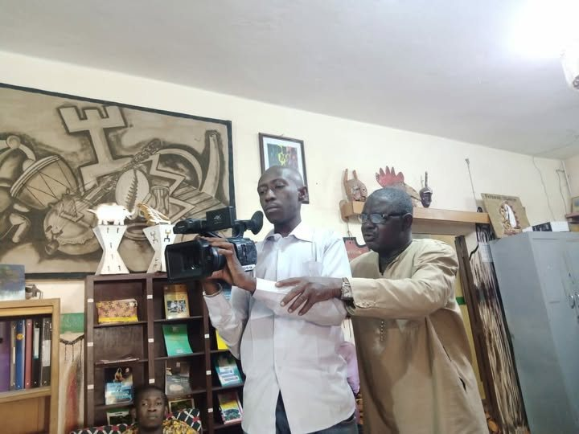
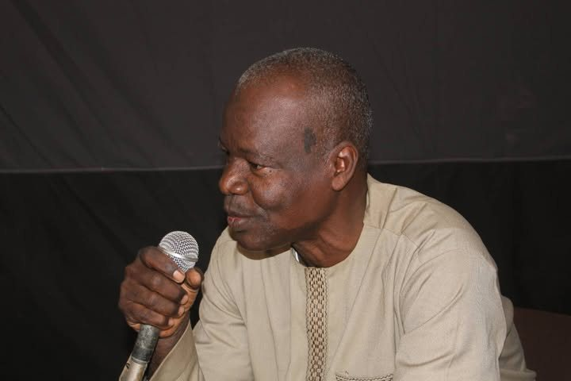

Association JA IMAGE — Cinéma malien & africain, Bamako
Des griots d'hier aux courts-métrages d'aujourd'hui : JA IMAGE fait vivre le cinéma malien et africain à Bamako, et accompagne les cinéastes autodidactes qui apprennent à cadrer, raconter et monter par eux-mêmes.
Notre conviction
On n'a pas besoin d'une école de cinéma pour raconter une histoire. On a besoin d'un écran, d'une caméra, et d'une salle qui y croit.
JA IMAGE réunit un public curieux et des cinéastes en apprentissage autour d'une même idée : le cinéma se transmet aussi par la pratique, la projection et la rencontre — pas seulement par les bancs d'une école.
« Former, créer, inspirer » — Cultivons les talents, partageons les histoires
Ce que nous faisons
Chaque action de l'association nourrit la suivante : montrer des films, ouvrir des fenêtres sur le monde, et donner aux autodidactes les moyens d'en tourner à leur tour.
Ciné-clubs, projections en plein air et rencontres avec des cinéastes pour donner à voir les films qui racontent le Mali et le continent.
Une place aussi pour les cinémas étrangers, pour nourrir les regards et créer des ponts entre les cultures.
Formations, mentorat et prêt de matériel pour celles et ceux qui apprennent à filmer sans passer par une école.
Prochainement
À la une
JA IMAGE lance une séance récurrente dédiée aux courts-métrages africains, ouverte à tous les publics.
Notre sélection de films marquants portés par une nouvelle génération de cinéastes.
Douze autodidactes ont terminé leur premier montage encadré en trois semaines.
Ils nous soutiennent
Rejoignez une association qui croit que le cinéma se pratique autant qu'il se regarde.
Nous rejoindre